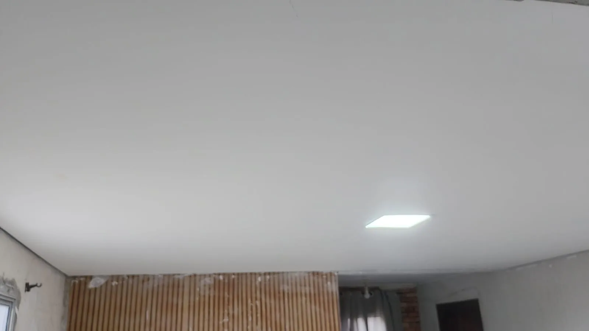

Pintura residencial
Paredes, tetos, quartos, salas, cozinhas, áreas internas e externas.
A RPG atende Carapicuíba com pintura residencial e comercial, preparação de paredes, gesso, drywall, texturas e outros acabamentos para renovação de ambientes.

ATENDIMENTO EM CARAPICUÍBATrabalho real RPGAtendimento sob orçamento e conforme disponibilidade para a região.
Paredes, tetos, quartos, salas, cozinhas, áreas internas e externas.
Ambientes comerciais, salas, lojas e outros espaços profissionais.
Reparos, forros, molduras, sancas e detalhes de acabamento.
Paredes, divisórias, fechamentos e soluções para reorganizar ambientes.
Acabamentos decorativos para fachadas, muros e paredes internas.
Correções e preparação das superfícies antes da etapa final de pintura.
Em Carapicuíba, o atendimento pode incluir pintura de paredes e tetos, renovação de ambientes, correção de superfícies, texturas, gesso e drywall. O escopo é avaliado de acordo com as condições do imóvel.
Para pedir orçamento, envie fotos do local, medidas aproximadas e uma descrição do serviço. Isso ajuda a antecipar a análise e organizar os próximos passos.
A RPG trabalha com serviços que podem ser combinados no mesmo projeto, ajudando a centralizar pintura e acabamento conforme a necessidade do imóvel.
Sim. A RPG atende serviços residenciais e também comerciais, conforme disponibilidade.
Sim. O orçamento pode combinar pintura, preparação, gesso, drywall e outros acabamentos.
Envie fotos, medidas aproximadas e localização da obra pelo WhatsApp.
Informe sua cidade, o ambiente, o tipo de serviço e, se possível, fotos e medidas aproximadas. A RPG retorna pelo WhatsApp para alinhar os próximos passos.